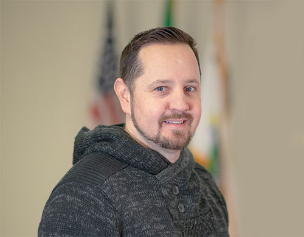

<div id="content" class="site-content"><div><div id="primary"><main id="main"><article id="post-1400" itemtype="https://schema.org/CreativeWork" itemscope="itemscope"><div itemprop="text"><div data-elementor-type="wp-page" data-elementor-id="1400" data-elementor-post-type="page">
<section data-id="e380e14" data-element_type="section" data-settings='{"background_background":"classic"}'><div><div data-id="e021e9d" data-element_type="column"><div><div data-id="02f25c0" data-element_type="widget" data-settings='{"ekit_we_effect_on":"none"}' data-widget_type="heading.default"><div><h2>City Council</h2></div></div></div></div></div></section><section data-id="f49e324" data-element_type="section" data-settings='{"stretch_section":"section-stretched","background_background":"classic"}'></section><section data-id="76587a6" data-element_type="section"><div>
<div data-id="96e66bf" data-element_type="column"><div>
<div data-id="2d0b7b9" data-element_type="widget" data-settings='{"ekit_we_effect_on":"none"}' data-widget_type="heading.default"><div><h2>Larry Bowan, Council Chair</h2></div></div>
<div data-id="ba91b20" data-element_type="widget" data-settings='{"ekit_we_effect_on":"none"}' data-widget_type="text-editor.default"><div><p>Councilmember Bowman had grown up on the West Coast when he enlisted in the United States Air Force from his hometown of Olivehurst, California in 2001. Soon after, he found himself stationed at Fairchild Air Force Base as an Aerospace Repair Technician. Mr. Bowman lived within the Spokane area since arriving in Washington in 2002 and eventually settled in the City of Airway Heights in 2008. After multiple years of coaching youth sports for the City, he was asked to become more involved in the community in which he lived. He accepted an opportunity to be on the City of Airway Heights Planning Commission that he eventually chaired. During his service on the Planning Commission, Mr. Bowman recognized the potential for even greater involvement and community service and eventually decided to run for City Council and was elected in November of 2015. Mr. Bowman has served as Council Chair since 2022. </p></div></div>
</div></div>
<div data-id="f5806ae" data-element_type="column" data-settings='{"animation":"fadeInRight"}'><div><div data-id="cabe2b1" data-element_type="widget" data-settings='{"ekit_we_effect_on":"none"}' data-widget_type="image.default"><div></div></div></div></div>
</div></section>
</div></div></article></main></div></div></div>
